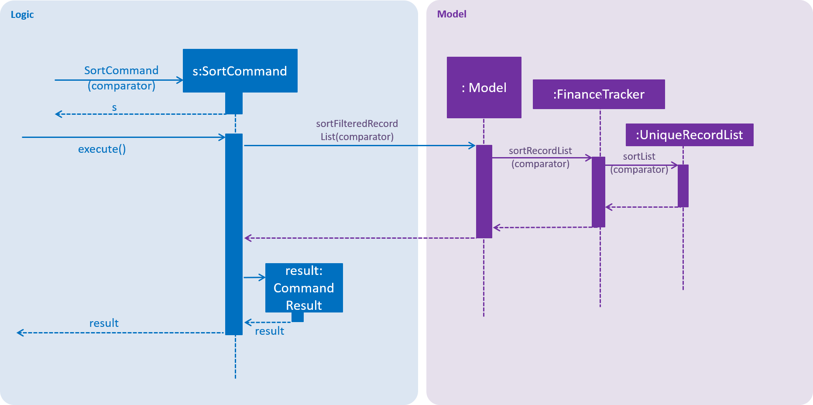

By: Team W17-3 Since: March 2019 Licence: MIT
- 1. Introduction
- 2. Setting Up
- 3. Design
- 4. Implementation
- 5. Documentation
- 6. Testing
- 7. Dev Ops
- Appendix A: Product Scope
- 8. User Stories
- 9. Use Cases
- 10. Non Functional Requirements
- 11. Glossary
- 12. Product Survey
- 13. Instructions for Manual Testing
- 13.1. Launch and Shutdown
- 13.2. Setting a budget
- 13.3. Allocating category budgets and showing allocated category budgets
- 13.4. Adding an expense
- 13.5. Editing an expense
- 13.6. Deleting an entry
- 13.7. Searching an entry
- 13.8. Sorting the entries
- 13.9. Obtaining a summary of entries
- 13.10. Changing the Finance Tracker data storage location
1. Introduction
Welcome to the In-Credit-Ble Developer Guide!
In-Credit-Ble is a finance tracker application created to simplify the managing and tracking of the user’s personal finances. With In-Credit-Ble, users will be able to stick to their budget and be more aware of their spending habits.
This developer guide specifies the design and implementation of In-Credit-Ble. The intended audience of this document is the developers, designers and software testers of our application.
Please continue on to the Setting Up section to get started. You can also read AboutUs.adoc and ContactUs.adoc for more information on how to contact us!
2. Setting Up
2.1. Prerequisites
-
JDK
9or laterJDK 10on Windows will fail to run tests in headless mode due to a JavaFX bug. Windows developers are highly recommended to use JDK9. -
IntelliJ IDE
IntelliJ by default has Gradle and JavaFx plugins installed.
Do not disable them. If you have disabled them, go to to re-enable them.
2.2. Setting up the project in your computer
-
Fork this repo, and clone the fork to your computer.
-
Open IntelliJ (if you are not in the welcome screen, click to close the existing project dialog first).
-
Set up the correct JDK version for Gradle.
-
Click
-
Click New… and find the directory of the JDK.
-
-
Click Import Project
-
Locate the
build.gradlefile and select it. Click OK -
Click Open as Project
-
Click OK to accept the default settings.
-
Open a console and run the command
gradlew processResources(Mac/Linux:./gradlew processResources). It should finish with theBUILD SUCCESSFULmessage.
This will generate all resources required by the application and tests. -
Open
MainWindow.javaand check for any code errors.-
Due to an ongoing issue with some of the newer versions of IntelliJ, code errors may be detected even if the project can be built and run successfully.
-
To resolve this, place your cursor over any of the code section highlighted in red. Press ALT+ENTER, and select Add '--add-modules=…' to module compiler options for each error.
-
-
Repeat this for the test folder as well ( check
HelpWindowTest.javafor code errors, and if so, resolve it the same way).
2.3. Verifying the setup
-
Run
seedu.finance.MainAppand try a few commands. -
Run the tests to ensure they all pass.
2.4. Configurations to do before writing code
2.4.1. Configuring the coding style
This project follows oss-generic coding standards. IntelliJ’s default style is mostly compliant with ours but it uses a different import order from ours. To rectify,
-
Go to (Windows/Linux), or (macOS).
-
Select
-
Click on the Imports tab to set the order.
-
For Class count to use import with '*' and Names count to use static import with '*': Set to
999to prevent IntelliJ from contracting the import statements. -
For Import Layout: The order is
import static all other imports,import java.*,import javax.*,import org.*,import com.*,import all other imports. Add a <blank line> between eachimport.
-
Optionally, you can follow the UsingCheckstyle.adoc document to configure Intellij to check style-compliance as you write code.
2.4.2. Updating documentation to match your fork
After forking the repo, the documentation will still refer to the CS2103-AY1819S2-W17-3/main repo.
If you plan to develop this fork as a separate product (i.e. instead of contributing to In-Credit-Ble), you should do the following:
-
Configure the site-wide documentation settings in
build.gradle, such as thesite-name, to suit your own project. -
Replace the URL in the attribute
repoURLinDeveloperGuide.adocandUserGuide.adocwith the URL of your fork.
2.4.3. Setting up CI
Set up Travis to perform Continuous Integration (CI) for your fork. See UsingTravis.adoc to learn how to set it up.
After setting up Travis, you can optionally set up coverage reporting for your team fork (see UsingCoveralls.adoc).
| Coverage reporting could be useful for a team repository that hosts the final version but it is not that useful for your personal fork. |
Optionally, you can set up AppVeyor as a second CI (see UsingAppVeyor.adoc).
| Having both Travis and AppVeyor ensures your App works on both Unix-based platforms and Windows-based platforms (Travis is Unix-based and AppVeyor is Windows-based) |
2.4.4. Getting started with coding
When you are ready to start coding,
-
Get some sense of the overall design by reading Section 3.1, “Architecture”.
-
Take a look at [GetStartedProgramming].
3. Design
3.1. Architecture

The Architecture Diagram above explains the high-level design of In-Credit-Ble. Given below is a quick overview of each component.
The .pptx files used to create diagrams in this document can be found in the link:https://github.com/CS2103-AY1819S2-W17-3/main/tree/master/docs/diagrams/diagrams] folder.
To update a diagram, modify the diagram in the pptx file, select the objects of the diagram, and choose Save as picture.
|
Main has only one class called MainApp. It is responsible for,
-
App launch: Initializes the components in the correct sequence, and connects them up with each other.
-
App shut down: Shuts down the components and invokes cleanup method where necessary.
Commons represents a collection of classes used by multiple other components.
The following class plays an important role at the architecture level:
-
LogsCenter: Used by many classes to write log messages to the App’s log file.
The rest of the App consists of four components.
Each of the four components
-
Defines its API in an
interfacewith the same name as the Component. -
Exposes its functionality using a
{Component Name}Managerclass.
For example, the Logic component (see the class diagram given below) defines its API in the Logic.java interface and
exposes its functionality using the LogicManager.java class.

How do the architecture components interact with each other?
The Sequence Diagram below shows how the components interact with each other for the scenario where the user issues the command delete 1.

delete 1 commandThe sections below give more details of each component.
3.2. UI component

API : Ui.java
The UI consists of a MainWindow that is made up of parts CommandBox, ResultDisplay, RecordListPanel,
StatusBarFooter, BrowserPanel, BudgetPanel, SummaryPanel etc. All these, including the MainWindow,
inherit from the abstract UiPart class.
The UI component uses JavaFx UI framework. The layout of these UI parts are defined in matching .fxml files that are in the src/main/resources/view folder.
For example, the layout of the MainWindow is specified in MainWindow.fxml.
The UI component,
-
Executes user commands using the
Logiccomponent. -
Listens for changes to
Modeldata so that the UI can be updated with the modified data.
3.3. Logic component
API :
Logic.java
-
Logicuses theFinanceTrackerParserclass to parse the user command. -
This results in a
Commandobject which is executed by theLogicManager. -
The command execution can affect the
Model( adding a record). -
The result of the command execution is encapsulated as a
CommandResultobject which is passed back to theUi. -
In addition, the
CommandResultobject can also instruct theUito perform certain actions, such as displaying help to the user. Given below is the Sequence Diagram for interactions within theLogiccomponent for theexecute("delete 1")API call.

delete 1 Command3.4. Model component

API : Model.java
The Model component,
-
stores a
UserPrefobject that represents the user’s preferences. -
stores the Finance Tracker data.
-
exposes an unmodifiable
ObservableList<Record>that can be 'observed' the UI can be bound to this list so that the UI automatically updates when the data in the list change. -
does not depend on any of the other three components.
3.5. Storage component

API : Storage.java
The Storage component,
-
can save
UserPrefobjects in json format and read it back. -
can save the Finance Tracker data in json format and read it back.
4. Implementation
This section describes in detail the implementation of certain features in In-Credit-Ble.
4.1. Search feature
This feature allows the user to filter out specific expenses based on keywords that correspond to the name, category or date.
This implementation is under Logic and Model Component.
4.1.1. Current Implementation
The search command uses predicates that implement the java.util.Predicate interface. These predicates are
used to filter the records that are inputted into the finance tracker. Each of these predicates contain a List<String> of keywords and a test()
command that is used to test if a record satisfy the conditions set in the predicate. These predicates are found in the Model component.
Types of predicate |
Functions |
|
Filters out records by a given category |
|
Filters out records by a given date |
|
Filters out records with names that matches a keyword |
Below is the UML sequence diagram and a step-by-step explanation of an example usage scenario.

-
User enters a search command (
search -cat food). The command is received by the UI components and the methodLogicManger#execute()is called. -
The command is received by
FinanceTrackerParser, which then creates aSearchCommandParserObject and callsSearchCommandParser#parse()method. -
Depending on the
-FLAGthat is entered by the user,SearchCommandParserwill create different predicates objects that correspond to the-FLAG.-
If
-catis inputted,CategoryContainsKeywordsPredicatewill be created. -
If
-dateis inputted,DateContainsKeywordPredicatewill be created. -
If
-nameis inputted,NameContainsKeywordPredicatewill be created.
-
-
A
SearchCommandObject with the correct predicate Object as parameter is created and returned to theFinanceTrackerParserand then to theLogicManager. -
LogicManagerthen callsSearchCommand#execute(), which callsModel#updateFilteredExpenseList()method to update the predicate ofFilterList<Record>.FilterList<Record>now contains a new set of records which is filtered by the new predicate. -
SearchCommandthen callsgetFilteredRecordListmethod to access the filtered records in anObservableList<Record>in order to calculate the sum of the money that is spent in all the filtered records. -
Then the record list panel will show a set of records according to the keywords. A
CommandResultis then created and returned toLogic Manager.
4.1.2. Design Consideration
This feature can be implemented in different ways in terms of how the records are found.
-
Alternative 1 : Check through all records and select those with the matched keywords based on the flag.
-
Pros: Easy to implement without changing original architecture.
-
Cons: Slow. Tends to take a long time to search through large number of records.
-
-
Alternative 2 : Each time a new category/date is called when making a record, create a new list. Each of these lists will hold all the records that correspond to these category or dates.
-
Pros: Very efficient, each time the command is called, just need to retrieve the list of the wanted field.
-
Cons: Need to change the original architecture of storage to introduce storing of different list corresponding to each tag. Will take up more space if there is many different tags.
-
We have implemented Alternative 1 as we want the search function to be more dynamic and more generic to accept different kind of search in the future implementation. If we were to choose Alternative 2, the search conditions will only be restricted to category and date where it is likely for different records to have the same value (eg. same date or same category). However, it is not feasible to create a different list for every single name that is inputted into the finance tracker.
4.2. Sort feature
By default, the list of entries is ordered according to the time the entry is entered into the application, where the entry entered first will be at the top of the list, and the entry entered last is at the bottom of the list. The sort mechanism allows users to view their expense records in a different way.
4.2.1. Current Implementation
The sort command uses comparators that implement java.util.Comparator interface to provide the comparison functions.
| Command | Comparator used | Effect |
|---|---|---|
|
|
Lexicographical order |
|
|
Descending order |
|
|
Reverse chronological order |
|
|
Lexicographical order |
| Command | Comparator used | Effect |
|---|---|---|
|
|
Reverse lexicographical order |
|
|
Ascending order |
|
|
Chronological order |
|
|
Reverse lexicographical order |
Here is the list of operations involved in the execution of command, sort -name.
See Figure 10 for steps 1 to 4, and Figure 11 for steps 5 to 10.

-
LogicManager#execute("sort -name")callsFinanceTrackerParser#parseCommand("sort -name"). -
FinanceTracker#parseCommand("sort -name")creates a newSortCommandParserobject and callsSortCommandParser#parse(" -name"). -
SortCommandParser#parse()creates a newRecordNameComparator()object, comparator and passes it as a parameter into theSortCommandconstructor. -
The
SortCommandobject, s, is then passed back to theSortCommandParser,FinanceTrackerParser, and finally back to theLogicManager.Figure 11. Sequence Diagram of Sort Command II -
LogicManager#execute("sort -name")then continues to callSortCommand#execute(). -
SortCommand#execute()callsModel#SortFilteredRecordList(comparator). -
Model#SortFilteredRecordList(comparator)callsFinanceTracker#sortRecordList(comparator). -
FinanceTracker#sortRecordList(comparator)callsUniqueRecordList#sortList(comparator). -
UniqueRecordList#sortList(comparator)then usesFXCollection’s static methodsort()to sort the records. -
SortCommand#execute()then creates aCommandResultobject and returns it back to theLogicManager.
4.2.2. Design Considerations
Aspect: How sort is executed
-
Alternative 1 (current choice): Use the
Comparatorinterface.-
Pros 1: Sorting can be done based on different attributes of the records (name, amount, date, category).
-
Pros 2: Allows an alternative ordering to be applied, does not have to be the natural ordering. Therefore, dates can be sorted in reverse chronological order, and amount in descending order.
-
Cons: A new class that implements the interface
Comparatorneeds to be created.
-
-
Alternative 2: Use the
Comparableinterface.-
Pros: Type-safe with compiler as
Comparable#compareTo()only accepts object of typeT, instead ofjava.lang.Object. -
Cons 1: There can only be one form or way of sorting the records.
-
Cons 2: Uses the natural order for sorting. Therefore, dates will be sorted in chronological order, amount in ascending order, and names and categories in lexicographical order.
-
Aspect: How sort is executed when [ORDER] argument is supplied and specified order is opposite to that of default. ( sort -name -desc)
-
Alternative 1 (current choice): A new comparator that imposes the reverse ordering of one of the four defined comparator classes is created.
( To sort the list by name in reverse lexicographical order, a new comparator,RecordNameComparator#reversed()is created.)-
Pros: Easy to implement.
-
Cons: List needs to be sorted again using the new comparator. Time will be needed to compare the records in the list.
-
-
Alternative 2: Reverse the list after sorting it using one of the four defined comparator classes.
( Sort list usingRecordNameComparator. Then use thereversecommand to reverse the list.)-
Pros: We can reuse what is already in the codebase (
reversecommand). -
Cons: Harder to implement, need to execute two commands internally when one command is entered in the
CommandBox.
-
4.3. Reverse feature
The reverse feature allows users to reverse the list of entries displayed on the graphic user interface.
The sort features are implemented with a default ordering.
The reverse command provides a convenient way for users to sort their entries in reverse order.
4.3.1. Current Implementation
This is how the reverse command is implemented:
-
LogicManager#execute("reverse")callsFinanceTrackerParser#parseCommand("reverse"). -
FinanceTrackerParser#parseCommand("reverse")creates aReverseCommandobject, r. -
r is passed back to the
FinanceTrackerParser, and then back to theLogicManager. -
LogicManager#execute("reverse")then moves on to callReverseCommand#execute(). -
ReverseCommand#execute()callsModel#reverseFilteredRecordList(). -
Model#reverseFilteredRecordList()callsFinanceTracker#reverseRecordList(). -
FinanceTracker#reverseRecordList()callsUniqueRecordList#reverseList(). -
UniqueRecordList#reverseList()usesFXCollection’s static methodreverse()to reverse the list of records. -
ReverseCommand#execute()then creates aCommandResultobject and returns it back to theLogicManager.
4.4. Undo/Redo feature
4.4.1. Current Implementation
The undo/redo mechanism is facilitated by VersionedFinanceTracker.
It extends FinanceTracker with an undo/redo history, stored internally as a FinanceTrackerStateList and currentStatePointer.
Additionally, it implements the following operations:
-
VersionedFinanceTracker#commit()— Saves the current finance tracker state in its history. -
VersionedFinanceTracker#undo()— Restores the previous finance tracker state from its history. -
VersionedFinanceTracker#redo()— Restores a previously undone finance tracker state from its history.
These operations are exposed in the Model interface as Model#commitFinanceTracker(), Model#undoFinanceTracker() and Model#redoFinanceTracker() respectively.
Given below is an example usage scenario and how the undo/redo mechanism behaves at each step.
Step 1.
The user launches the application for the first time. The VersionedFinanceTracker will be initialized with the initial finance tracker state, and the currentStatePointer pointing to that single finance tracker state.

Step 2.
The user executes delete 5 command to delete the 5th record in the finance tracker. The delete command calls Model#commitFinanceTracker(), causing the modified state of the finance tracker after the delete 5 command executes to be saved in the financeTrackerStateList, and the currentStatePointer is shifted to the newly inserted finance tracker state.

Step 3.
The user executes spend n/burger … to add a new record. The spend command also calls Model#commitFinanceTracker(), causing another modified finance tracker state to be saved into the financeTrackerStateList.

If a command fails its execution, it will not call Model#commitFinanceTracker(), so the finance tracker state will not be saved into the financeTrackerStateList.
|
Step 4.
The user now decides that adding the record was a mistake, and decides to undo that action by executing the undo command. The undo command will call Model#undoFinanceTracker(), which will shift the currentStatePointer once to the left, pointing it to the previous finance tracker state, and restores the finance tracker to that state.
If the currentStatePointer is at index 0, pointing to the initial finance tracker state, then there are no previous finance tracker states to restore.
The undo command uses Model#canUndoFinanceTracker() to check if this is the case. If so, it will return an error to the user rather than attempting to perform the undo.
|
The following sequence diagram shows how the undo operation works:

The redo command does the opposite — it calls Model#redoFinanceTracker(), which shifts the currentStatePointer once to the right, pointing to the previously undone state, and restores the finance tracker to that state.
If the currentStatePointer is at index financeTrackerStateList.size() - 1, pointing to the latest finance tracker state, then there are no undone finance tracker states to restore. The redo command uses Model#canRedoFinanceTracker() to check if this is the case. If so, it will return an error to the user rather than attempting to perform the redo.
|
Step 5.
The user then decides to execute the command list. Commands that do not modify the finance tracker, such as list, will usually not call Model#commitFinanceTracker(), Model#undoFinanceTracker() or Model#redoFinanceTracker(). Thus, the financeTrackerStateList remains unchanged.

Step 6.
The user executes clear, which calls Model#commitFinanceTracker(). Since the currentStatePointer is not pointing at the end of the financeTrackerStateList, all finance tracker states after the currentStatePointer will be purged. We designed it this way because it no longer makes sense to redo the spend n/burger … command. This is the behavior that most modern desktop applications follow.

The following activity diagram summarizes what happens when a user executes a new command:

4.4.2. Design Considerations
Aspect: How undo & redo executes
-
Alternative 1 (current choice): Saves the entire finance tracker.
-
Pros: Easy to implement.
-
Cons: May have performance issues in terms of memory usage.
-
-
Alternative 2: Individual command knows how to undo/redo by itself.
-
Pros: Will use less memory ( for
delete, just save the record being deleted). -
Cons: We must ensure that the implementation of each individual command are correct.
-
Aspect: Data structure to support the undo/redo commands
-
Alternative 1 (current choice): Use a list to store the history of finance tracker states.
-
Pros: Easy for new Computer Science student undergraduates to understand, who are likely to be the new incoming developers of our project.
-
Cons: Logic is duplicated twice. For example, when a new command is executed, we must remember to update both
HistoryManagerandVersionedFinanceTracker.
-
-
Alternative 2: Use
HistoryManagerfor undo/redo-
Pros: We do not need to maintain a separate list, and just reuse what is already in the codebase.
-
Cons: Requires dealing with commands that have already been undone: We must remember to skip these commands. Violates Single Responsibility Principle and Separation of Concerns as
HistoryManagernow needs to do two different things.
-
4.5. Budget Management
This group of features allows the user to set a total budget and allocate a portion of the total budget to different categories. The current spending will increase when records are added.
This implementation is under Logic, Model, Storage and UI Component.
The classes associated with Budget are shown in the class diagram below:

The above diagram shows the structure of the classes associated with Budget.
TotalBudget and CategoryBudget are sub-classes of Budget and TotalBudget can contain
any number of CategoryBudget.
As seen in the class diagram, the CategoryBudget in TotalBudget is kept in a HashSet.
4.5.1. Setting a Budget
This feature allows the user to set a budget for the FinanceTracker. The budget can be changed by setting the budget again.
Given below is a sequence diagram and step by step explanation of how Finance Tracker
creates a budget when the user uses the set command to set a budget.
-
The user enters a
set command(set $/120). The command is passed down and received by theLogicManager. -
The
LogicMangercalls theFinanceTrackerParser#ParseCommand()method which creates aSetCommandParserobject. TheFinanceTrackerParser#ParseCommand()method then calls theSetCommandParser#parse()method, passing in the amount argument entered by the user ("120" in example). -
SetCommandParser#parse()callsParserUtil#ParseAmount()to handle the parsing of the amount. The method checks if the argument is a valid amount value and throws an exception if it is not. If there are no exceptions,ParserUtil#ParseAmount()returns the processed amount string.SetCommandParser#parse()then creates aSetCommandwith the processed amount ("120" in example) and the newSetCommandgets passed back to theLogicManager. -
Now that the command is processed,
LogicManager#execute()callsSetCommand#execute()to execute the command.SetCommand#execute()creates a newBudgetobject initialised with the amount (budget of 120 created in example). TheBudgetobject (labelled p) is then passed to theModelManagerby theModelManager#addBudget()method. -
ModelManager#addBudget()callsFinanceTracker#addBudget()to update the budget of the current instance of the Finance Tracker.FinanceTracker#addBudget()updates theTotalBudgetobject field (labelled q) inFinanceTrackerby callingTotalBudget#updateBudget()and passing theBudget pand the records stored in theFinanceTracker. -
TotalBudget#updateBudget()first checks whether the new budget set is more than or equal to the sum of the category budgets and throws an exception if it is not. It then gets the budget data (totalBudget,currentBudget) fromBudget pand sets it usingTotalBudget#set()(total budget of app is now 120 in example). It then updates the current budget and spending based on the records that was stored and passed in by theFinanceTracker. This is shown in the code snippet below:public void updateBudget(Budget budget, ObservableList<Record> records) throws CategoryBudgetExceedTotalBudgetException { Double totalCategoryBudget = 0.0; for (CategoryBudget cb: this.categoryBudgets) { totalCategoryBudget += cb.getTotalBudget(); } if (budget.getTotalBudget() < totalCategoryBudget) { throw new CategoryBudgetExceedTotalBudgetException(budget, totalCategoryBudget); } set(budget.getTotalBudget(), budget.getCurrentBudget()); updateBudget(records); } -
Once
TotalBudget qhas finished updating, control is passed all the way back toSetCommand#execute()which will create aCommandResult(labelled result). The result is passed back toLogicManager#executeand all the way to the user to show that the budget has been set (Budget set to 120 in example). -
Although not shown in the diagram, the UI is then updated with the new budget. The UI update of budget data will be covered in Section 4.5.7, “Updating the UI with Budget Data”.
4.5.2. Design Consideration
Aspect: Updating budget data after Record updates
-
Solution 1: Maintaining one
updateBudgetmethod to update current expenditure and budget left based on iterating through changed record list.-
Pros: Easier to implement and manage a single method.
-
Cons: Updates for even single addition/edit/deletion of record could be slow if record list gets too large.
-
-
Solution 2: Maintain individual methods for each update of budget data (add/edit/remove records) (Current Implementation)
-
Pros: App would run updates faster with more targeted methods.
-
Cons: More code and test cases to be written to implement and maintain several methods for updating budget.
-
4.5.3. Allocating a budget to category
This feature allows user to set a category budget after the total budget is set.
Given below is a sequence diagram and step by step explanation of how Finance Tracker executes when a user sets a category budget.

-
User enters command
allocate $/10 c/Food. The command is received byFinanceTrackerParser -
FinanceTrackerParserwill then create aAllocateCommandParserObject and callsAllocateCommandParser#parse()method -
AllocateCommandParser#parse()method callsArgumentTokenizer#tokenize()method to tokenize the user input String into arguments and prefixes in anArgumentMultimapObject. -
AllocateCommandParser#parse()method then calls another method within the same classAllocateCommandParser#arePrefixesPresent()to check if there are any missing prefixes. If there are missing prefixes,ParseExceptionwill be thrown -
If no exceptions are thrown from the step 4, a new
AllocateCommandobject is created with the given arguments. -
Control is returned to
LogicManagerwhich then callsAllocateCommand#execute()method. -
AllocateCommand#execute()callsModelManager#addCategoryBudget()method and control is transferred toModelManagerwhich is in theModelComponent. -
ModelManager#addCategoryBudget()then callsFinanceTracker#addCategoryBudget()which then callsTotalBudget#setNewCategoryBudget(). -
TotalBudget#setNewCategoryBudget()takes into account if there are any previous budget allocated to a category and if so, adds the expenses to the new budget assigned to the category.
4.5.4. Design consideration
Aspect: allocating Category Budget
-
Alternative 1 (current choice): Allocating Category Budget is done with only one command
allocate-
Pros: User only needs to make use of one command to control the budget of the category and will not be confused with too many other commands.
-
Cons: Requires the developer to ensure the application checks that if there is a current budget allocated to the same category, it should be reflected accordingly.
-
-
Alternative 2: Have two other commands
increaseCatBudgetanddecreaseCatBudgetto allow user to control the budget of the category-
Pros: User is able to adjust the budget by increasing/decreasing the budget and error message will be shown. if the category was not previously allocated with a budget
-
Cons: User might be confused with too many commands and not intuitive.
-
4.5.5. Listing Category Budgets allocated
This feature allows user to list the category budgets and the current spending in these categories after category budgets are allocated.
4.5.6. Implementation
-
User enters command
showin Command Box. -
ShowCategoryBudgetCommand#execute()is executed and the method first checks whether there are any allocated category budgets. -
If there are no allocated category budgets, a message will be printed in the ResultDisplay.
-
If there are allocated category budgets,
Model#getCatBudget()is called to obtain the set ofCategoryBudget. -
An
Iteratoris then used to iterate through the set ofCategoryBudgetsand thecurrentSpendingis printed with thetotalBudgetallocated to theCategoryBudget.
4.5.7. Updating the UI with Budget Data
Previous sections have covered how the budget of the Finance Tracker is updated within the App. This section aims to give a overview of the logic for updating the User Interface of the App to reflect the budget updates to the user.
To explain the update, an Activity Diagram accompanied with a step-by-step walk-through is proved. The Activity Diagram is modelled after MainWindow#execute() which calls the appropriate
methods to update the budget UI.
-
The command is first executed by the
LogicManager. The execution of commands will update the budget data in the Finance Tracker as specified in previous sections. The success message of the command is then displayed to the user (Result of command that user typed). -
There is then a conditional check on whether the command has changed the budget data (Based on
CommandResultpassed back from command execution). For brevity and based on the scope of the section, the other conditional checks for the command will be excluded. List of Commands that change budget:spend,edit,delete,set,allocate,clear,setfile,undo,redo -
When it has been determined that the command has altered budget data, 3 components of the
UIneed to be updated before continuing. If you are unfamiliar with the components of theUI, refer to the Graphical User Interface section of our User Guide.-
BudgetPanel: The
BudgetPanelconsists of 2 sections, the Budget Bar and the text below the bar. The bar and text is updated with data retrieved from theLogiccomponent of the App, with the changes to Budget Bar being animated. The colour of the bar is then set based on the difference in current spending and total budget set (Red: Budget Exceeded, Yellow: Spending is >= 80% of budget, Green: Spending is <80% of budget). -
Browser Panel: The
BrowserPanelonly contains text and is updated similar to the text in the BudgetPanel. -
Summary Panel: The
SummaryPanelconsists of a pie chart. If the updated budget data shows no expense recorded within the specified time period, text explaining that there is no recorded expenses is shown to the user instead. Else, the summary data is updated and the pie chart is edited to reflect changes in the expenditures. Refer to Section 4.6, “Summary” for a more detailed explanation of the implementation of the feature.
-
-
After the
UIis updated, there is another check to see if the command given wassummary. If it was, the current Panel being displayed (BrowserPanelorSummaryPanel) is swapped to the other panel. Again, refer to the Summary section below for more implementation details. -
The method ends by returning the
CommandResultthat was returned from the execution of command to theMainApp.
4.6. Summary
The summary feature shows an overview of your previous expenditures in a pie chart. Each sector of the chart represents a category, labelled with the name and total expenditure for each category.
You can also set a report period by indicating the number of days or months. Specifying a report period is optional. If no parameters are defined, data of expenditures in the past week (ie. the last 7 days) will be displayed in the pie chart by default.
4.6.1. Implementation
The implementation of the Summary command can be divided into two phases – preparation and execution. Given below is an explanation of how the summary mechanism behaves at each phase.
Preparation
In the preparation phase, the application will parse the command. Below is the UML Sequence diagram and a step-by-step explanation of the preparation stage.

-
User first enters the command
summary #/7 p/d. This command is received byFinanceTrackerParser, which then callsSummaryCommandParser#parse()to createSummaryCommand. -
If no parameters are provided by the user,
SummaryCommand#SummaryCommand()is called to createSummaryCommandwith the default parameters ofperiodAmountas7andperiodasd. Otherwise,SummaryCommand#SummaryCommand(periodAmount, period)is called to createSummaryCommandwith the specified parameters. -
SummaryCommandthen checks if the parameters are valid. If any parameter is invalid, an exception will be thrown, and an error message will be shown to the user. Else, the parameters are stored in instance variables andSummaryCommandis returned toLogicManager. -
LogicManagerthen callsSummaryCommand#execute(), which updates the variablesRecordSummaryPredicate,summaryPeriodandperiodAmountinModelManager.
Execution
In the execution phase, the program handles ShowSummaryRequestEvent posted by SummaryCommand to retrieve the data to be displayed. The data will be rendered as a JavaFX PieChart and then displayed. Below is the UML sequence diagram and a step-by-step explanation of the execution stage.

-
The
handleShowSummarywill be handled byMainWindow#handleShowSummary(), which will callSummaryPanel#setData()and pass the data as parameters by callingLogic#getRecordSummary(),Logic#getSummaryPeriod()andLogic#getPeriodAmount(). -
Logic#getRecordSummary()gets the filtered record list by callingModel#getRecordSummary(), which returns an unmodifiableObservableList, containing only expenses in the last 7 days. -
Logic#getRecordSummary()then organises the data into aLinkedHashMap<String, Double>, where the key value pair represents category and cost. -
Logic#getSummaryPeriod()andLogic#getPeriodAmount()get their respective data by calling the method of the same name inModel. -
Once the parameters are passed into
SummaryPanel#setData(),StackPane#getChildren()#clear()is called to clear any display elements inStackPane. JavaFX’sPieChartis then used to render the summary pie chart. There are two possible scenarios which could happen:-
If the data received is empty, a
Textobject is generated andStackPane#getChildren()#add()is called, which informs the user that there are no expenditures. -
Else,
SummaryPanel#setSummaryData()will be called, which generates a Pie Chart and callsStackPane#getChildren()#add(), which adds it toStackPane. This is shown in the code snippet below:public void setSummaryData(LinkedHashMap<String, Double> summaryData) { PieChart pieChart = new PieChart(); Set<String> keySet = summaryData.keySet(); for (String s : keySet) { pieChart.getData().add(new PieChart.Data(s, summaryData.get(s))); } for (int i = 0; i < pieChart.getData().size(); i++) { PieChart.Data data = pieChart.getData().get(i); data.getNode().getStyleClass().add(getPieChartColorStyleFor(data.getName())); data.nameProperty().bind(Bindings.concat(data.getName(), " - $", String.format("%.2f", data.getPieValue()))); } pieChart.setLegendSide(Side.BOTTOM); chartArea.getChildren().add(pieChart); }
-
4.6.2. Design Consideration
Aspect: Representation for Summary of Expenditure
Alternative 1 (current choice): Represent summary of expenses using a pie chart.

PieChart-
Pros: Labels can act as a legend as well as there might be categories with similar colours. This will help the user to easily identify the expenditures in different categories.
-
Cons: If there are too many categories, the labels may not show up as it will clash with the other labels. The data presented may also become too cluttered as well.
Alternative 2 (planned for [v2.0]): Represent summary of expenses using an Aster Plot graph.
In v2.0 of In-Credit-Ble, the summary feature intends to use a D3.js Aster Plot graph to display the summary of expenditures instead of the current pie chart. This will help contribute to the aesthetics and user-friendliness of displaying the data in In-Credit-Ble.

Each sector of the chart represents a category. The area of each sector indicates the total budget amount allocated for a particular category, while the coloured area of the sector denotes the amount spent for that category. On mouseover of each sector, a pop-up display of the category name and amount spent for each category will be shown. The colours used for the category in the aster plot graph should also correspond to the same colour palette used for the category labels.
-
Pros: More effective in showing the user what is the remaining budget amount for each category. It also allows users to easily perceive whether their spending is within their budget for each category.
-
Cons: Difficult to implement as it requires linking to D3, a third party JavaScript library for data visualisations via HTML, SVG, and CSS.
4.7. Theme
The theme feature allows users to change the colour theme of the application to provide
them with some customisation.
4.7.1. Implementation
-
User enters command
theme COLOURin Command Box, whereCOLOURis eitherdark,light,blueorpink. -
ThemeCommand#formatTheme()is executed to change the user input ofCOLOURto a word that has first character in uppercase and the rest of the characters in lowercase. -
ThemeCommand#isValidTheme()is then used to check if theCOLOURis one of the four specified above. -
ThemeCommandthen returns aCommandResultthat sets the boolean fieldchangeThemeto true. -
MainWindow#handleSwitchTheme()is then executed to call the appropriate method to switch the theme of the application to the user-specified input.
4.8. Logging
We are using java.util.logging package for logging. The LogsCenter class is used to manage the logging levels and logging destinations.
-
The logging level can be controlled using the
logLevelsetting in the configuration file (See Section 4.9, “Configuration”). -
The
Loggerfor a class can be obtained usingLogsCenter.getLogger(Class)which will log messages according to the specified logging level. -
Currently log messages are output through:
Consoleand to a.logfile.
Logging Levels
-
SEVERE: Critical problem detected which may possibly cause the termination of the application -
WARNING: Can continue, but with caution -
INFO: Information showing noteworthy actions by the application -
FINE: Details that is not usually noteworthy but may be useful in debugging print the actual list instead of just its size
4.9. Configuration
Certain properties of the application can be controlled ( user prefs file location, logging level) through the configuration file (default: config.json).
5. Documentation
We use asciidoc for writing documentation.
| We chose asciidoc over Markdown because asciidoc, although a bit more complex than Markdown, provides more flexibility in formatting. |
5.1. Editing Documentation
See UsingGradle.adoc to learn how to render .adoc files locally to preview the end result of your edits.
Alternatively, you can download the AsciiDoc plugin for IntelliJ, which allows you to preview the changes you have made to your .adoc files in real-time.
5.2. Publishing Documentation
See UsingTravis.adoc to learn how to deploy GitHub Pages using Travis.
5.3. Converting Documentation to PDF format
We use Google Chrome for converting documentation to PDF format, as Chrome’s PDF engine preserves hyperlinks used in webpages.
Here are the steps to convert the project documentation files to PDF format.
-
Follow the instructions in UsingGradle.adoc to convert the AsciiDoc files in the
docs/directory to HTML format. -
Go to your generated HTML files in the
build/docsfolder, right click on them and select . -
Within Chrome, click on the Print option in Chrome’s menu.
-
Set the destination to Save as PDF, then click Save to save a copy of the file in PDF format. For best results, use the settings indicated in the screenshot below.

5.4. Site-wide Documentation Settings
The build.gradle file specifies some project-specific asciidoc attributes which affects how all documentation files within this project are rendered.
Attributes left unset in the build.gradle file will use their default value, if any.
|
| Attribute name | Description | Default value |
|---|---|---|
|
The name of the website. If set, the name will be displayed near the top of the page. |
not set |
|
URL to the site’s repository on GitHub. Setting this will add a "View on GitHub" link in the navigation bar. |
not set |
|
Define this attribute if the project is an official SE-EDU project. This will render the SE-EDU navigation bar at the top of the page, and add some SE-EDU-specific navigation items. |
not set |
5.5. Per-file Documentation Settings
Each .adoc file may also specify some file-specific asciidoc attributes which affects how the file is rendered.
Asciidoctor’s built-in attributes may be specified and used as well.
Attributes left unset in .adoc files will use their default value, if any.
|
| Attribute name | Description | Default value |
|---|---|---|
|
Site section that the document belongs to.
This will cause the associated item in the navigation bar to be highlighted.
One of: * Official SE-EDU projects only |
not set |
|
Set this attribute to remove the site navigation bar. |
not set |
5.6. Site Template
The files in docs/stylesheets are the CSS stylesheets of the site.
You can modify them to change some properties of the site’s design.
The files in docs/templates controls the rendering of .adoc files into HTML5.
These template files are written in a mixture of Ruby and Slim.
|
Modifying the template files in |
6. Testing
6.1. Running Tests
There are three ways to run tests.
| The most reliable way to run tests is the 3rd one. The first two methods might fail some GUI tests due to platform/resolution-specific idiosyncrasies. |
Method 1: Using IntelliJ JUnit test runner
-
To run all tests, right-click on the
src/test/javafolder and chooseRun 'All Tests'. -
To run a subset of tests, you can right-click on a test package, test class, or a test and choose
Run 'ABC'.
Method 2: Using Gradle
-
Open a console and run the command
gradlew clean allTests(Mac/Linux:./gradlew clean allTests).
| See UsingGradle.adoc for more info on how to run tests using Gradle. |
Method 3: Using Gradle (headless)
Thanks to the TestFX library we use, our GUI tests can be run in the headless mode. In the headless mode, GUI tests do not show up on the screen. That means the developer can do other things on the Computer while the tests are running.
To run tests in headless mode, open a console and run the command gradlew clean headless allTests (Mac/Linux: ./gradlew clean headless allTests).
6.2. Types of tests
We have two types of tests:
-
GUI Tests - These are tests involving the GUI. They include,
-
System Tests that test the entire application by simulating user actions on the GUI. These are in the
systemtestspackage. -
Unit tests that test the individual components. These are in
seedu.finance.uipackage.
-
-
Non-GUI Tests - These are tests not involving the GUI. They include,
-
Unit tests targeting the lowest level methods/classes.
seedu.finance.commons.StringUtilTest -
Integration tests that are checking the integration of multiple code units (those code units are assumed to be working).
seedu.finance.storage.StorageManagerTest -
Hybrids of unit and integration tests. These test are checking multiple code units as well as how the are connected together.
seedu.finance.logic.LogicManagerTest
-
6.3. Troubleshooting Testing
Problem: HelpWindowTest fails with a NullPointerException.
-
Reason: One of its dependencies,
HelpWindow.htmlinsrc/main/resources/docsis missing. -
Solution: Execute Gradle task
processResources.
7. Dev Ops
7.2. Continuous Integration
We use Travis CI and AppVeyor to perform Continuous Integration on our projects. See UsingTravis.adoc and UsingAppVeyor.adoc for more details.
7.3. Coverage Reporting
We use Coveralls to track the code coverage of our projects. See UsingCoveralls.adoc for more details.
7.4. Documentation Previews
When a pull request has changes to asciidoc files, you can use Netlify to see a preview of how the HTML version of those asciidoc files will look like when the pull request is merged. See UsingNetlify.adoc for more details.
7.5. Making a Release
Here are the steps to create a new release.
-
Update the version number in
MainApp.java. -
Generate a JAR file using Gradle.
-
Tag the repo with the version number.
v0.1 -
Create a new release using GitHub and upload the JAR file you created.
7.6. Managing Dependencies
A project often depends on third-party libraries. For example, In-Credit-Ble depends on the Jackson library for JSON parsing. Managing these dependencies can be automated using Gradle. For example, Gradle can download the dependencies automatically, which is better than these alternatives:
-
Include those libraries in the repo (this bloats the repo size)
-
Require developers to download those libraries manually (this creates extra work for developers)
Appendix A: Product Scope
Target user profile:
-
has a need to manage a significant amount of expenses/finances
-
has a need to be more aware of his/her spending habits/patterns
-
can type fast
-
prefers typing over mouse input
-
is reasonably comfortable using CLI applications
Value proposition: Manage expenses faster than a typical mouse/GUI driven application
8. User Stories
Priorities: High (must have) - * * *, Medium (nice to have) - * *, Low (unlikely to have) - *
| Priority | As a … | I want to … | So that I can… |
|---|---|---|---|
|
new user |
see usage instructions |
refer to it when I forget how to use the application |
|
user |
have a record of my recent expenses (day, week, month, category) |
be more aware of where I am spending my money |
|
user |
add a new entry |
|
|
user |
delete an entry |
remove an entry that is no longer needed anymore |
|
user |
categorise my expenses |
be aware of what I am spending most of my money on |
|
user |
be able to set a budget (a total for the month and for which category) |
be more thrifty in terms of my expenditure |
|
user |
summarise my daily spending in a pictorial form |
easily see how on track I am in adhering to my budget |
|
user |
locate a specific entry easily |
recall how much I spent |
|
user |
save my data |
refer to it when I use the application next time |
|
user |
sort my expenses in terms of amount |
be aware of what costs the most |
|
user |
set daily budgets |
limit the amount I spend each day |
|
user |
analyse my spending habits/patterns |
derive a savings plan and better plan my expenses |
|
spendthrift user |
receive tips to be a better saver |
be more aware of different ways to keep within my budget |
|
IT savvy user |
categorise my expenses based on the different methods of payment |
automatically track my cashless expenditures as well as credit card transactions |
9. Use Cases
(For all use cases below, the System is In-Credit-Ble and the User is the user, unless specified otherwise)
Use case: Setting a budget for the month
MSS
-
User requests to set a budget for the current month
-
System displays current budget amount for the month
Use case ends.
Extensions
-
2a. With addition of expense entries, System updates the remaining amount in the current month’s budget
Use case ends.
Use case: Allocate budget to a category
MSS
-
User requests to list summary of budget based on category
-
System shows a summary of budget based on category
-
User requests to allocate a certain amount to a category
-
System allocates the user input amount to the given category
Use case ends.
Use case: Increasing budget for the month
MSS
-
User requests to list entries
-
System shows a list of expense entries
-
User requests to increase budget for the month (can be associated with a category)
-
System will increase the budget for the month (that is associated with category input)
Use case ends.
Use case: Add expense entry
MSS
-
User requests to list entries
-
System shows a list of expense entries
-
User requests to add a specific expense entry in the list
-
System adds the expense entry
Use case ends.
Extensions
-
3a. Some fields are missing.
-
3a1. System shows an error message.
Use case resumes at step 2.
-
Use case: Editing an expense entry
MSS
-
User requests to list expense entries
-
System shows a list of expense entries
-
User requests to edit a specific expense entry in the list
-
System updates the expense entry as well as the budget summary accordingly
Use case ends.
Extensions
-
2a. The list is empty.
Use case ends
-
3a. The given index is invalid.
-
3a1. System shows an error message.
Use case resumes at step 2.
-
Use case: Delete expense entry
MSS
-
User requests to list expense entries
-
System shows a list of expense entries
-
User requests to delete a specific expense entry in the list
-
System deletes the entry
Use case ends.
Extensions
-
2a. The list is empty.
Use case ends.
-
3a. The given index is invalid.
-
3a1. System shows an error message.
Use case resumes at step 2.
-
Use case: Listing history of entered commands
MSS
-
User requests to list history of entered commands
-
System shows history of commands in reverse chronological order (latest command first)
Use case ends.
Extensions
-
1a. There was no entered commands
Use case ends.
Use case: User wants to undo previous command
MSS
-
User requests to undo previous command
-
System undo previous command and updates budget accordingly
Use case ends.
Extensions
-
1a. There was no previous command
Use case ends with message to let User know there is no previous command
Use case: User wants to redo previous undone command
MSS
-
User requests to redo previous undone command
-
System redo previous undone command and updates budget accordingly
Use case ends.
Extensions
-
1a. There was no previous undone command
Use case ends with message to let User know there is no previous undone command
Use case: User wants to clear all entries
MSS
-
User requests to clear all entries
-
System clears all entries and updates the budget accordingly
Use case ends.
Extensions
-
1a. There are no entries in the System
Use case ends with message to let User know there are no entries in System
10. Non Functional Requirements
-
Should work on any mainstream OS as long as it has Java
9or higher installed. -
Should work on both 32-bit and 64-bit environments.
-
Should be able to hold up to 1000 expenditure records without a noticeable sluggishness in performance for typical usage.
-
A user with above average typing speed for regular English text (i.e. not code, not system admin commands) should be able to accomplish most of the tasks faster using commands than using the mouse.
-
The user interface should be intuitive and easy to use for people who are not IT-savvy.
-
Responses by the system should be fast (~5 seconds).
11. Glossary
- Amount
-
The amount of money for expenditure and budget
- Entry
-
A listed item/activity tracked by the application. It generally consists of the name, amount and date along with a category tag (if specified)
- Mainstream OS
-
Windows, Linux, Unix, OS-X
- Records
-
The list of all entries stored in the application
12. Product Survey
Monefy - Money Manager
Author: Aimbity AS
Pros:
-
Interface is easy to use
-
Able to track expenses and income over various periods of time
-
Free
Cons:
-
Unable to synchronise and restore or backup data between devices
-
Do not have an auto-income function
-
Do not have an option for reminder
-
Do not have a feature for recurrent spending
Money Lover: Expense Tracker & Budget Planner
Author: Finsify
Pros:
-
Allows setting of recurring payments
-
Able to see what expenses add up to in the forthcoming months
-
Able to sync across phone and computer
-
Able to download to own excel worksheet
Cons:
-
Need to make a budget for every wallet
-
Unable to choose multiple categories for a budget
-
Unable to edit a transaction
-
Budgets are based per account
Seedly - Personal Finance App
Author: Seedly Pte Ltd
Pros:
-
Visually appealing
-
Able to import transactions from ibanking accounts and allow manual inputs for cash transactions
-
Pie charts give a visual illustration on expenditure
-
Search function present
Cons:
-
Sync feature takes a long time
-
Crash every now and then
-
Categories are hard to identify in pie charts
-
Not smart enough to recognise similar entries
-
Summary presented is confusing
-
Unable to add in sub-categories to further pinpoint area of spending
13. Instructions for Manual Testing
Given below are instructions to test the application manually.
| These instructions only provide a starting point for testers to work on; testers are expected to do more exploratory testing. |
13.1. Launch and Shutdown
-
Initial launch
-
Download the JAR file and copy into an empty folder.
-
Double-click the JAR file.
Expected: Shows the GUI with a set of sample records. The window size may not be optimum.
-
-
Saving window preferences
-
Resize the window to an optimum size. Move the window to a different location. Close the window.
-
Re-launch the application by double-clicking the JAR file.
Expected: The most recent window size and location is retained.
-
13.2. Setting a budget
-
Setting a initial budget
-
Test case:
set $/500
Expected: The budget is set to $500. The Budget Panel and Browser Panel are updated accordingly. -
Test case:
set $/500.50
Expected: The budget is changed to $500.50. The Budget Panel and Browser Panel are updated accordingly. -
Test case:
set 500
Expected: The budget is not changed. Error details shown in the status message. Status bar remains the same. -
Test case:
set $/$500
Expected: The budget is not changed. Error details shown in status message about amount. -
Test case:
set $/-1
Expected: Similar to previous. -
Test case:
set $/0
Expected: Similar to previous.
-
13.3. Allocating category budgets and showing allocated category budgets
-
Allocating category budget (no spending in category; we assume that total budget set is $500)
-
Test case:
allocate $/50 c/Shopping, thenshow
Expected: Category Budget is allocated inShoppingcategory. Result Display shows current spending over budget. for allocated category budgets -
Test case:
allo $/30 c/Transport, thenshow
Expected: Category Budget is allocated inTransportcategory. Result Display shows current spending over budget. for allocated category budgets -
Test case:
allocate $/30 c/Books c/Movies, thenshow
Expected: Category Budget allocated inMoviescategory. Result Display current spending over budget. for allocated category budgets -
Test case:
allocate $/$30 c/Holiday
Expected: Category Budget not allocated. Error details shown in status message. -
Test case:
allocate $/30 c/Holiday In Melbourne
Expected: Category Budget not allocated. Error details shown in status message. -
Test case:
allocate $/600 c/School
Expected: Category Budget not allocated. Category Budget more than Total budget. Error details in status message.
-
-
Allocating category budget (previously had spending in the category)
Assume thatFoodcategory has $16.50 spent so far-
Test case:
allocate $/17 c/Food
Expected: Category Budget allocated in Food category. Result Display shows current spending over budget for allocated category budgets. -
Test case:
allocate $/10 c/Food
Expected: Category Budget not allocated. Current Spending in category more than user input for category budget. Error details shown in status message.
-
13.4. Adding an expense
-
Adding an entry no matter what is listed.
-
Test case:
spend n/Chicken Rice $/5.50 c/Food d/1/4/2019 r/Tasty
Expected: Entry is added to the back of the list. Timestamp in the status bar is updated. -
Test case:
spend n/Tshirt $/10.00 d/31/03/2019 c/Food c/Clothes
Expected: Entry is added to the back of the list. Category recorded down is Clothes. Timestamp in the status bar is updated. -
Test case:
spend n/Chicken Rice $/5.50 c/Food
Expected: Entry is added to the back of the list. Since date is not supplied, today’s date will be recorded. Timestamp in the status bar is updated. -
Test case:
add n/Chicken Rice $/5.50 c/Food
Expected: Entry is added to the back of the list. Since date is not supplied, today’s date will be recorded. Timestamp in the status bar is updated. -
Test case:
spend n/Chicken Rice $/5.50
Expected: No entry is added. Error details shown in the status message. Status bar remains the same. -
Other incorrect spend commands to try:
spend n/Chicken Rice c/Food,spend $.5.50 c/Food,spend n/Chicken Rice $/5.5 c/Food,spend n/Chicken Rice $/5.50 c/Food d/12/12/2045,spend n/Chicken Rice $/$5.50 c/Food
Expected: Similar to previous
-
13.5. Editing an expense
-
Edit an entry while all entries are listed
-
Prerequisites: List all entries using the
listcommand. The list must have some entries in it. -
Editing one parameter of an entry.
-
Test case:
edit 1 n/test
Expected: The name of the first entry is being changed to test. Time stamp in the status bar is updated. -
Test case:
edit 1 d/01/02/2003
Expected: The date of the first entry is being changed to 01/02/2003. Time stamp in the status bar is updated. -
Test case:
edit 1 $/100
Expected: The amount spent of the first entry is changed to $100. The budget shown in the budget panel and the browser panel is updated. Time stamp in the status bar is updated. -
Test case:
edit 1 c/Test
Expected: The category of the first entry is changed to Test. Time stamp in the status bar is updated. -
Test case:
edit 1 r/Testing testing
Expected: The description of the first entry is changed to "Testing testing". Time stamp in the status bar is updated.
-
-
Editing more than one parameter of an entry
-
Test case:
edit 1 n/test1 $/123
Expected: The first entry is being changed based on the command. The budget shown in the budget panel and the browser panel is updated. Time stamp in the status bar is updated. -
Test case:
edit 1 n/test2 $/1234 d/01/01/2001
Expected: Similar to previous. -
Test case:
edit 1 n/test3 $/12345 d/01/01/2002 c/Test1
Expected: Similar to previous. -
Test case:
edit 1 n/test4 $/123456 d/01/01/2003 c/Test2 r/Testing test
Expected: Similar to previous.
-
-
Removing description for an entry
-
Prerequisites: The first entry of the list must have a description.
-
Test case:
edit 1 r/
Expected: The description for the first entry is removed.
-
-
Invalid command due to index
-
Test case:
edit 0 n/test
Expected: No entry is edited. Error details shown in the status message. Status bar remains the same.
-
-
Invalid command due to parameters
-
Test case:
edit 1 $/test
Expected: No entry is added. Error details shown in the status message. Status bar remains the same. -
Other incorrect edit commands to try:
edit 1 d/01/01/2045,edit 1 $/$100,edit 1 r/12345678901234567890123456789012345678901.
-
-
13.6. Deleting an entry
-
Deleting an entry while all entries are listed.
-
Prerequisites: List all entries using the
listcommand. Multiple entries in the list. -
Test case:
delete 1
Expected: First entry is deleted from the list. Details of the deleted entry shown in the status message. Timestamp in the status bar is updated. -
Test case:
delete 0
Expected: No entry is deleted. Error details shown in the status message. Status bar remains the same. -
Other incorrect delete commands to try:
delete,delete x(where x is larger than the list size),delete three
Expected: Similar to previous.
-
13.7. Searching an entry
|
In order for the expected results of the test to be accurate, please input the following commands below to set up your
finance tracker. 1. clear2. spend n/Chicken Rice $/5.50 c/Food d/1/4/20193. spend n/Chicken Rice $/5.50 c/Food d/2/4/20194. spend n/Cupcakes $/2.50 c/Food d/2/4/20195. spend n/Tshirt $/15 c/Clothes d/1/4/20196. spend n/Jeans $/40 c/Clothes d/2/4/2019
|
-
Searching for an entry or entries in a list.
-
Prerequisites: There must already be entries that are shown in the record list panel. Please set up the finance tracker as shown in the NOTE above.
-
Search by name
-
Test case:
search -name chicken rice
Expected: 2 records are shown in the records list panel. The result display shows that the total spent on the searched records is $11.00. -
Test case:
search -name chicken
Expected: Same as previous.
-
-
Search by category
-
Test case:
search -cat clothes
Expected: 2 records are shown in the records list panel. The result display shows that the total spent on the searched records is $55.00.
-
-
Search by date
-
Test case:
search -date 2/4/2019
Expected: 3 records are shown in the records list panel. The result display shows that the total spent on the searched records is $48.00. -
Test case:
search -date 5/4/2019
Expected: 0 records are shown in the records list panel. The result display shows that the total spent on the searched records is $0.00.
-
-
Search with no records shown
-
No matches in the keywords:
search -date 5/4/2019
Expected: 0 records are shown in the records list panel. The result display shows that the total spent on the searched records is $0.00. -
No parameters inputted after the search flag:
search -date
Expected: Same as previous.
-
-
Invalid search command
-
Test case:
search -cat -dateExpected: Error message is shown. The records list panel remains the same. -
Other incorrect search commands to try:
search -food,search -cat -food,search -cat -date -name.
-
-
13.8. Sorting the entries
-
Sort entries by name
-
Prerequisites: List must have some entries in it.
-
Test case:
sort -name
Expected: List is sorted by name in lexicographical order. Timestamp in the status bar is updated. -
Test case:
sort -name -desc
Expected: List is sorted by name in reverse lexicographical order. Timestamp in the status bar is updated. -
Test case:
sort -name -asc
Expected: List is sorted by name in lexicographical order. Timestamp in the status bar is updated. -
Test case:
sort -asc -name
Expected: List will not be sorted. Error message is shown. Status bar remains the same. -
Other incorrect sort commands to try:
sort -desc -name,sort -name -inc,sort -name -asc a-z
Expected: Similar to previous.
-
-
Sort entries by amount
-
Prerequisites: List must have some entries in it.
-
Test case:
sort -amount
Expected: List is sorted by amount in descending order. Timestamp in the status bar is updated. -
Test case:
sort -amount -asc
Expected: List is sorted by amount in ascending order. Timestamp in the status bar is updated. -
Test case:
sort -amount -desc
Expected: List is sorted by amount in descending order. Timestamp in the status bar is updated. -
Test case:
sort -asc -amount
Expected: List will not be sorted. Error message is shown. Status bar remains the same. -
Other incorrect sort commands to try:
sort -desc -amount,sort -amount -inc,sort -name -amount
Expected: Similar to previous.
-
13.9. Obtaining a summary of entries
-
Entering
summarycommand when In-Credit-Ble is empty.-
Prerequisites: No existing entries in In-Credit-Ble.
-
Test case:
summary
Expected: Error message is shown. -
Test case:
summary #/6 p/d
Expected: Error message is shown. -
Test case:
summary #/10 p/m
Expected: Error message is shown.
-
-
Entering
summarycommand when there are entries listed in the records list panel.-
Prerequisites: There is at least one entry that exists in the specified report period.
-
Test case:
summary
Expected: Entries that have been entered in In-Credit-Ble in the past 7 days will be displayed in the pie chart. A success message will also be displayed in the result box. -
Test case:
summary #/9 p/d
Expected: Entries that have been entered in In-Credit-Ble in the past 9 days will be displayed in the pie chart. A success message will also be displayed in the result box. -
Test case:
summary #/5 p/m
Expected: Entries that have been entered in In-Credit-Ble in the past 5 months will be displayed in the pie chart. A success message will also be displayed in the result box.
-
On the other hand, if there are no existing entries in the specified report period (but In-Credit-Ble has other existing entries):
-
Test case:
summary #/9 p/m
Expected: Error message is shown.
13.10. Changing the Finance Tracker data storage location
| In order to test this command, please take note the name of the json file you are currently on. The name of the file can be seen at the right side of the status bar. By default, the json file is "finance.json". |
-
Changing the file when the filename does not belong to a file that exists or the file is wrongly formatted.
-
Prerequisites: The filename does not belong to an existing json file with stored Finance Tracker data. The user is currently using finance.json file.
-
Test case:
setfile f/testfile
Expected: A new finance tracker file will be created with no records in the records list and the budget will be shown as $0.00.
-
-
Changing the file when the filename belongs to a file with existing data added by the In-Credit-Ble.
-
Prerequisites: The filename belongs to a file that already exists with data added by In-Credit-Ble or data that is correctly formatted.
-
Test case:
setfile f/testfile
Expected: The data previously added to testfile.json will be loaded into In-Credit-Ble. -
Test case:
setfile f/finance
Expected: No apparent change as the same file the user is currently on will be loaded again.
-